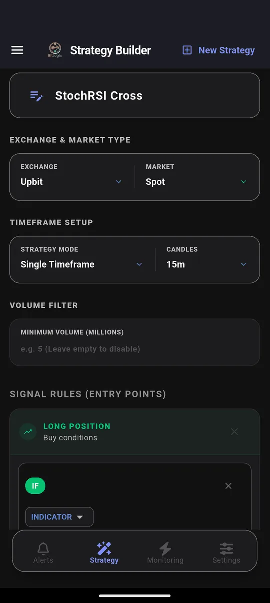
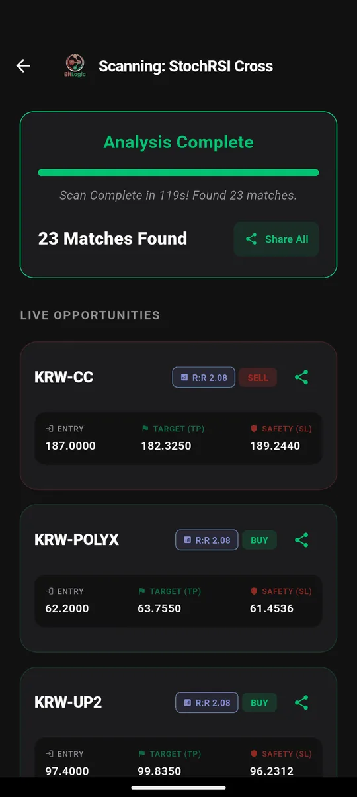

Upbit Screener: How to Track Korean Market Moves from Outside Korea
Quick answer: Upbit is South Korea's largest crypto exchange, and its KRW market is one of the most closely watched in the world. When Korean retail piles into a coin, the move often spills over to exchanges everywhere. You can't trade on Upbit without Korean residency, but you can watch it. BitLogic scans 400 Upbit markets against your own rules from anywhere. A test on 26 September 2026 took 119 seconds and found 23 momentum signals.
BitLogic is a no-code crypto screener and alert app for Android and Windows, with a free web screener. It scans every pair on an exchange against rules you build and sends matches as push notifications, or as Telegram messages on Pro.
Features and test results checked 26 September 2026.
Why Traders Outside Korea Watch Upbit
Almost all of Upbit's traffic comes from South Korea. That makes it a clean read on one of crypto's most active retail markets. Three reasons global traders keep an eye on it:
- Korean retail moves altcoins. Upbit's KRW pairs regularly trade huge volume in mid- and small-cap coins, and a surge there can lead moves elsewhere.
- Listings get noticed. New Upbit listings have repeatedly been followed by sharp moves in the listed coin on other exchanges. That's why "Upbit listing announcement" is a common search well outside Korea.
- The "kimchi premium". Prices on Korean exchanges sometimes trade above global prices when Korean demand runs hot. Traders watch the gap as a sentiment gauge.
What BitLogic does and doesn't do here: BitLogic reads Upbit's live prices and volume and alerts you when a market matches your rule. It doesn't track Upbit's listing announcements, and it doesn't calculate the kimchi premium. It shows you that a coin is moving on Upbit, fast enough to act on the same coin wherever you trade.
Can You Trade on Upbit?
| Who | Status |
|---|---|
| South Korean residents | Can trade (real-name Korean bank account required) |
| Everyone else | Can't open an Upbit Korea account, but can watch Upbit's market data |
BitLogic only reads Upbit's public market data, so watching works from anywhere. When a signal fires, act on the same coin at an exchange that's available to you, such as Kraken, OKX or Bitstamp.
How to Screen Upbit in BitLogic
Step 1: Choose Upbit
In the Strategy tab, pick Upbit. It is a spot exchange, so the market is set to Spot. Prices appear in the market's own currency, which for KRW pairs is Korean won.

Step 2: Choose a fast rule
The test used StochRSI Cross on 15-minute candles, a momentum rule that fires when StochRSI turns from an extreme:
- Buy: %K crosses above %D while %K is below 20
- Sell: %K crosses below %D while %K is above 80
Step 3: Scan

Step 4: Keep watching
Live Monitoring re-runs the same strategy in the background (every 1, 5, 15 or 30 minutes, every 1 or 4 hours, or once a day) and notifies you when a new pair matches, even with the app closed. You can monitor up to five strategies at once. On Pro, the same alerts also go to Telegram: tap Connect Telegram, press Start in the bot, and you are done. Telegram delivery is handy when Korea's busiest hours fall in your night.
Watch Upbit free on Google Play, or on Windows.
The Test: Upbit, 26 September 2026
| Setting | Value |
|---|---|
| Market | Upbit spot, 15-minute candles |
| Rule | StochRSI Cross (buy and sell) |
| Markets checked | 400 |
| Time | 119 seconds |
| Matches | 23, including KRW-CC (sell), KRW-POLYX and KRW-UP2 (buy) |
These are scan results, not recommendations. A signal on Upbit's KRW market isn't a signal to buy the same coin elsewhere at any price.
Three Rules for Watching Korea
1. KRW volume surge
IF Volume [15m, Last Closed] Is Greater Than Volume SMA(20) × 3
AND Close [15m] Is Greater Than Open [15m]This fires on a green 15-minute candle with triple the usual volume, the kind of burst that happens when Korean retail finds a coin.
2. Sudden jump
IF Close [15m, Last Closed] Increased by % 4"Increased by %" compares the last closed candle with the one before it. On Upbit, a 4% jump in a single 15-minute candle is worth knowing about.
3. Momentum confirmed on the hour
IF RSI(14) [1h, Last Closed] Crosses Above 60
AND EMA(9) [1h] Is Greater Than EMA(21) [1h]This filters out 15-minute noise by asking for hourly momentum and a short-term uptrend together.
Best Time to Watch
Korea's market is busiest in Korean daytime and evening (KST, UTC+9). That is late at night or early morning in North America, and the early hours in Europe. Live Monitoring, with Telegram delivery on Pro, covers those hours for you.
Upbit Timeframes in BitLogic
| Market | Timeframes |
|---|---|
| Upbit Spot | 1m, 3m, 5m, 15m, 30m, 1h, 4h, 1d, 1w |
FAQ
Can foreigners use Upbit?
Upbit Korea requires Korean residency and a real-name Korean bank account, so most people outside Korea can't trade there. Anyone can read Upbit's public market data, which is what BitLogic uses.
How do I track Upbit volume from the US or Canada?
Use a screener that reads Upbit's market data directly. In BitLogic, select Upbit, add a rule such as volume above three times its 20-candle average, and turn on Live Monitoring. You're alerted when any Upbit market spikes.
Does BitLogic alert on new Upbit listings?
No. BitLogic doesn't track listing announcements. It alerts on price, volume and indicator rules, so it flags coins that start moving on Upbit, including newly listed ones once they trade.
What is the kimchi premium?
The kimchi premium is the gap that sometimes appears when crypto trades at a higher price on Korean exchanges such as Upbit than on global exchanges, usually because of strong Korean demand. BitLogic shows Upbit prices in won but doesn't calculate the premium.
Does BitLogic need an Upbit account?
No. BitLogic reads Upbit's public market data only, so no account or API key is needed.
The Bottom Line
You can't trade on Upbit from abroad, but you can see what Korea's biggest crypto market is doing, in real time, against your own rules. When KRW volume surges, you'll know about it without watching the screen.
Download BitLogic free on Google Play and start watching Upbit.
Nothing here is financial advice.